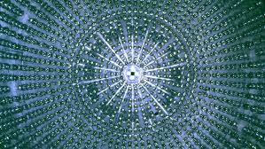

Os neutrinos são partículas minúsculas, subatômicas. Bilhões delas nos atravessam a cada segundo, vindas principalmente do Sol. Ao contrário da luz do Sol, que podemos ver facilmente, os neutrinos são muitíssimo difíceis de detectar.
Importância dos neutrinos
Eles são a segunda partícula em maior abundância no universo. Apenas os fótons são mais numerosos. Dessa maneira, os neutrinos são importantes porque são produzidos por estrelas, explosões estelares ou raios cósmicos. Assim, conhecê-los auxilia na compreensão do funcionamento do universo.